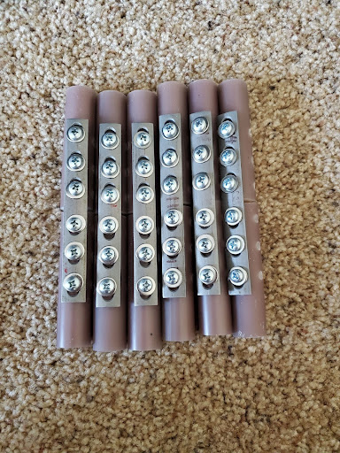

My Portfolio
A showcase of my projects, engineering skills and knowledge
Internships
Hoag Orthopedics Research Institute
July, 2021 - February 2022
This internship is an extension of a senior design project done at UCI. Once we were able to successfully determine that friction was able to decrease the slipping between the surgical bone plate and the bone, we decided to continue the project as interns where we primarily performed testing and analysis of the textured plates that we designed.
Once of the problems that was encountered during the school year was that the tensile testing machine would cause cracks in the bones; effectively destroying the bone and damaging the plate. The first thing that we needed to do to continue the internship was to design a fixture that was able to support the bone as well as prevent slipping between the fixture and the tensile testing machine. I constructed a model in SolidWorks and performed Finite Element Analysis on the model to ensure that the fixture would not buckle under tensile stress.
After creating the fixture, the internship was able to continue, and we were able to start performing testing in the laboratory. We primarily only needed to perform tensile testing as the data we collected during the school year had a wide range of errors due to the initial fixtures.
>As we were testing with the tensile machine, we also needed to find the coefficient of friction. The way we were able to achieve this goal was to utilize a pulley system and a series of weights. A large weight was placed on plate which acted as our normal force in the friction equation. The pulley would pull the plate along until the plates began to slowly move. This is when static friction stops, and kinetic friction begins and that is how we are able to determine the friction forces of our textured plates. Both the tensile testing and the friction testing utilized 25 bone plates to achieve accurate results.
Ingels Engineering Inc.
September 2021 - January 2022
In this internship, I was able to learn the day-to-day manufacturing processes. I learned how parts and prototypes were made and what the purpose of each tool was when machining. In addition to this, I was able to learn how to program and operate the CNC machines which may come in handy when machining parts in-house. Lastly, I believe that I was able to make a lasting contribution to the company as I have taken manufacturing courses before and was able to offer insight into the company practices. These suggestions were able to ultimately increase efficiency of machining.
Projects

Tannery Wastewater Treatment System Thesis
October 2021 - Present
For my thesis, I worked on an off grid wastewater treatment system that would process effluent from the leather tanning industries. I chose to work on this project as it seemed as though I thought that I can genuinely help people with the designed system.
After researching the most effective methods of wastewater treatment, I created CAD models of the parts used. The system is broken up into three difference stages. The primary stage is removal of the large particles in the water. Using a mixing tank and a sedimentation tank, suspended solids can be removed through coagulation and flocculation with the coagulant of choice being aluminum sulfate as it is cheap and effective.
The secondary component of the wastewater treatment system is a way to remove heavy metals from wastewater. This can be done through the concept of photoreduction. The ion Chromium (VI) is the most toxic chemical in tannery wastewater and this method can reduce this ion into its less toxic state Chromium (III). Using titanium dioxide as a photocatalyst, the solar radiation of the sun can be harnessed to increase the rate at which the redox reaction happens.
The tertiary stage in the system is the disinfection stage. The system utilizes an activated carbon filter to remove any microbes in the effluent as well as adsorb any additional chromium that was not reduced in the previous stage.
Autonomous Shopping Cart
March 2021 - June 2021
In this project, we were tasked to design a completely automatic vehicle that can move throughout a store and get products that a customer desired completely without human interaction. Our initial design involved having the customers close behind. Because of this fact, we decided to change the meaning of the word "autonomous." It did not make sense for the customers to follow close behind the cart, so instead they would still push the cart around to get to their destinations.

The project was split up into 5 different segments that would be the main design attributes to the system: steering, navigation, safety, anti-theft, and check-out. Here you will see the series of sketches and our thought processes to achieve these aspects of design. Ultimately, we agreed on the using a rack and pinion steering design, a triangulation tower method for our navigation, built in cameras for our safety, RF modules to prevent people from leaving with the carts and RF tags on each product for checkout.


Once the design elements were decided on, the next step was to simulate the model in Robotic Operating System (ROS). With this program, we were able to compile a list of packages together and form a working virtual system of our shopping cart.
Hoag Bone Plate Project
January 2021 - March 2021
The goal of this project was to determine if increasing friction between a surgical bone plate and the bone would effectively decrease the movement and slipping of the screws. A bone plate is used a cast that is screwed directly to the bone for more serious injuries.

In order to increase the friction, we thought the best and most cost-effective method of doing so was to add grooves or textures to the area that made contact with the bone. After conducting research, three different textures were ultimately decided on for their uniaxial friction coefficients.


With the textures designed, all that was left was to perform both tensile and dynamic testing. To ensure that there were no outside sources of error, we designed a single screw plate with an attachable handle to both the tensile and dynamic testing machine. We chose to make the single hole plate to prove the initial theory as well as determine the effectivity of a single screw rather than the whole plate with six screws.
Lifter Project
January 2021 - March 2021
The goal of this project was to design a system that allowed a weight to move from the floor up to three feet in the air and pushed onto a platform. We began working on preliminary sketches our designs; we needed a way to bring the weight up and a way to force the weight onto the platform.

While most people would design a scissor lift for this particular application, we came at this problem with a larger emphasis on creating the most cost-effective system that we could. So instead, we decided to utilize a series of pulleys to achieve our goals. The pulleys would pull a plate where the weights lied and a mechanical arm that would push the weight off the plate and onto the platform.
Remote Control Car Project
September 2020 - December 2020
For this project, we were tasked to create a physical model of a bot that would move based on an arduino remote control. The two main aspects of the project were the CAD modeling and the Arduino programming for the remote control.

For the CAD model design, I created a chassis that would theoretically hold all the electronics and the Arduino. In addition to this, a steering system needed to be designed and I chose to go with the Crank Shaft steering system. The propulsion system is utilizing an air piston connected to a one way bearing to ensure that the bot would only move forward.